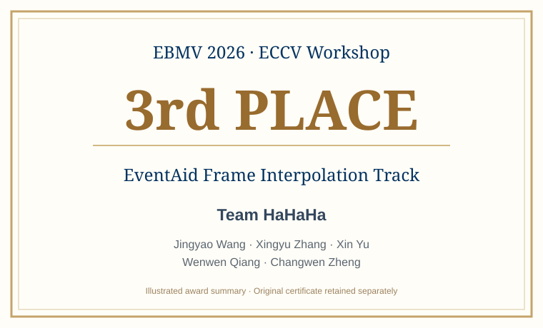

Welcome
About Me
Xingyu Zhang . I am a Ph.D. student at the Institute of Software, Chinese Academy of Sciences (ISCAS), enrolled at the University of Chinese Academy of Sciences (UCAS). I am advised by Changwen Zheng and Wenwen Qiang .
My research focuses on machine learning for temporal and dynamical systems. My work has explored time-series forecasting through frequency-domain representations, causal structure modeling, probabilistic forecasting, and reliable LLM-based prediction, as well as invariant representation learning. More recently, I have been exploring agentic reinforcement learning and world action models (WAMs), particularly the learning of environment dynamics, long-horizon planning, and the transfer of task knowledge across embodiments.
Time-Series Forecasting Causal & Structural Learning LLM-based Modeling Agentic Reinforcement Learning World Action Models
News Recent updates
Sep 2026 Our team HaHaHa received 3rd place in the EventAid Frame Interpolation Track of the EBMV 2026 Challenge. [Award ] 2026 Our paper DGF was accepted to NeurIPS 2026. [DGF ] 2026 Our paper F-LLM was accepted to ACM Multimedia 2026. [F-LLM ] Jul 2025 Our work on invariant causal mechanisms in vision-language models appeared at ICML 2025. [ICML 2025 ] Oct 2024 Our paper FreDF was published at ACM Multimedia 2024. [FreDF ]
Selected Publications 6 papers · 2024–2026
DGF Time-Series Forecasting
NeurIPS 2026
Dirichlet-Guided Group Forecasting for Alleviating Over-smoothing in Time Series Forecasting
Xingyu Zhang , Jingyao Wang, Xin Yu, Zeen Song, Jianqi Zhang, Changwen Zheng, Wenwen Qiang
Advances in Neural Information Processing Systems (NeurIPS), 2026
Preserving distinct predictive modes to reduce over-smoothing and model diverse plausible futures.
ACM MM 2026
Closing the Loop: A Control-Theoretic Framework for Provably Stable Time Series Forecasting with LLMs
Xingyu Zhang , Hanyun Du, Zeen Song, Jianqi Zhang, Changwen Zheng, Wenwen Qiang
ACM International Conference on Multimedia (ACM MM), 2026
Introducing feedback-based error correction to stabilize long-horizon autoregressive predictions.
CAIFormer Causal Forecasting
arXiv 2025
CAIFormer: A Causal Informed Transformer for Multivariate Time Series Forecasting
Xingyu Zhang , Wenwen Qiang, Siyu Zhao, Huijie Guo, Jiangmeng Li, Chuxiong Sun, Changwen Zheng
arXiv preprint arXiv:2505.16308, 2025
Partitioning variable histories by inferred causal roles for target-specific forecasting.
Information Sciences 2025
Robustness and Orthogonality: Time Series Forecasting via Wavelets
Yingjie Tian, Siyu Zhao, Xingyu Zhang
Information Sciences, vol. 717, article 122328, 2025
Studying forecasting robustness through orthogonal wavelet decomposition.
CLIP-ICM Invariant Learning
ICML 2025
Learning Invariant Causal Mechanism from Vision-Language Models
Zeen Song, Siyu Zhao, Xingyu Zhang , Jiangmeng Li, Changwen Zheng, Wenwen Qiang
International Conference on Machine Learning (ICML), PMLR 267, 2025
Learning invariant causal subspaces to improve out-of-distribution generalization of vision-language models.
ACM MM 2024
Not All Frequencies Are Created Equal: Towards a Dynamic Fusion of Frequencies in Time-Series Forecasting
Xingyu Zhang , Siyu Zhao, Zeen Song, Huijie Guo, Jianqi Zhang, Changwen Zheng, Wenwen Qiang
ACM International Conference on Multimedia (ACM MM), pp. 4729–4737, 2024
Dynamically modeling and fusing frequency components for time-series prediction.
More publications and citation information can be found on my Google Scholar profile.
Education
2023 — 2029 (expected)
Ph.D. Student University of Chinese Academy of Sciences (UCAS)
Institute of Software, Chinese Academy of Sciences (ISCAS)
Advisors: Changwen Zheng and Wenwen Qiang
Honors & Awards

September 8, 2026 3rd Place — EventAid Frame Interpolation Track EBMV 2026 Challenge · ECCV 2026 Workshop
Team: Team HaHaHa
Team members: Jingyao Wang, Xingyu Zhang, Xin Yu, Wenwen Qiang, Changwen Zheng
View award details ↗